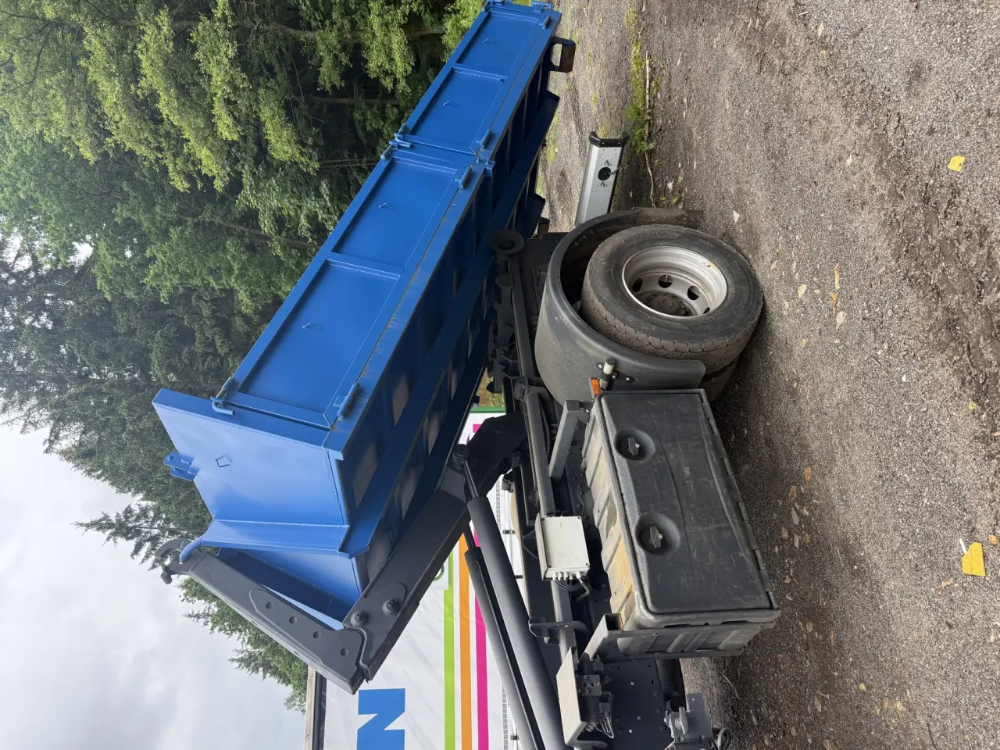

Reálný výjezdPřístup, trasa a stání se řeší předem, ne až na místě.
Slaný
Kontejnerová doprava pro odvoz suti, zeminy, dřeva, bioodpadu a dovoz stavebních materiálů ve Slaném, na Kladensku a okolí.
Z praxe
Slaný se nejlépe naceňuje podle přesné adresy, typu nákladu, možnosti stání a toho, jestli řešíte jen odvoz, nebo i navazující dovoz materiálu.
Chci cenu
U lokálních stránek bývá největší rozdíl mezi dvorem, ulicí, stavbou a vnitroblokem. Fotka místa proto šetří zbytečné telefonáty.
Odvoz stavební suti, zeminy, betonu, dřeva a bioodpadu, přistavení kontejneru a dovoz písku nebo recyklátu.
Domácnosti, stavební firmy, provozy, rekonstrukce domů, zahrady a menší stavby.
Stačí adresa, náklad, množství, termín a informace o přístupu.
Zakázky ve Slaném nacením podle trasy, dostupnosti místa a množství. U větších prací dává smysl domluvit postup předem, aby se doprava plánovala efektivně.
Pokud po bourání nebo výkopu potřebujete dovézt recyklát, štěrk nebo zeminu, napište obě potřeby do jedné poptávky.
Slaný a okolí je dobré řešit podle přesné trasy. U vzdálenější obce pomůže kompletní zadání najednou, hlavně náklad, množství, termín a možnost spojit více prací.
Lokální poznámka
Pro Slaný je důležitější reálný přístup než obecný slib. Ulice, dvůr, jednosměrka, stavba nebo firemní areál často rozhodnou víc než samotné množství.
Dotazy
Pošlete přesnou obec, náklad, množství a termín. U delší trasy pomůže vědět, jestli se dá spojit více prací.
Ano, pokud to dává smysl podle trasy. Typicky se řeší odvoz zeminy nebo suti a následný dovoz recyklátu, štěrku nebo písku.
Provozovatel je plátce DPH. Při nacenění si potvrdíme, zda je částka uvedena s DPH a co přesně obsahuje.
Slaný a okolí je dobré nacenit podle přesné adresy, protože vzdálenost, množství a složení nákladu výrazně ovlivní trasu. U stavebních firem lze domluvit i opakované odvozy.
U Slaného a okolí pomůže přesná obec, náklad, množství a možnost spojit odvoz s dovozem materiálu. U vzdálenější trasy je dobré domluvit termín hned.
Rychlá poptávka
Stačí telefon, obec a co se má odvézt nebo dovézt. Fotka místa nebo odpadu nacenění urychlí. Ozvu se s cenou nebo krátkým doplňujícím dotazem.